First some notation
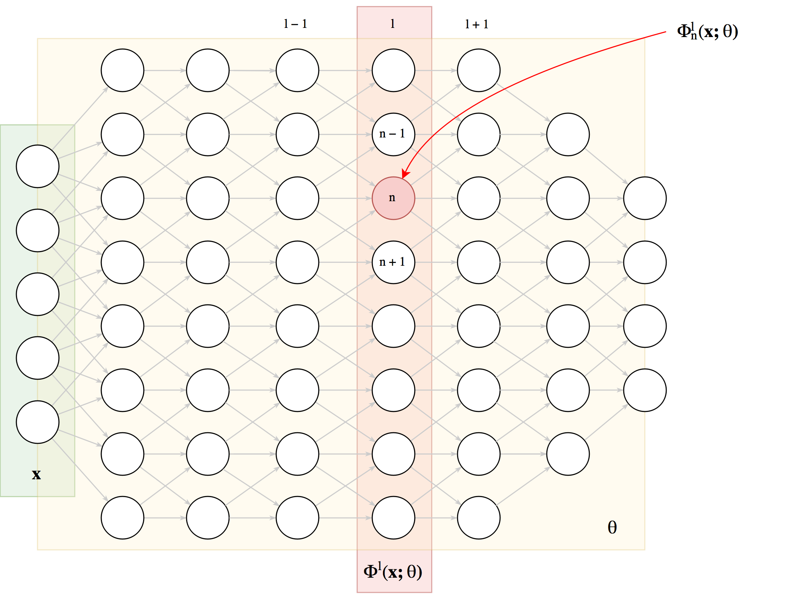

Feature
Visualisation (2017)
Learning about neurons
\[ \bf{x}_0 = \operatorname{argmax}_{\bf{x}} \Phi^l_n\left(\bf{x};
\theta\right) \]
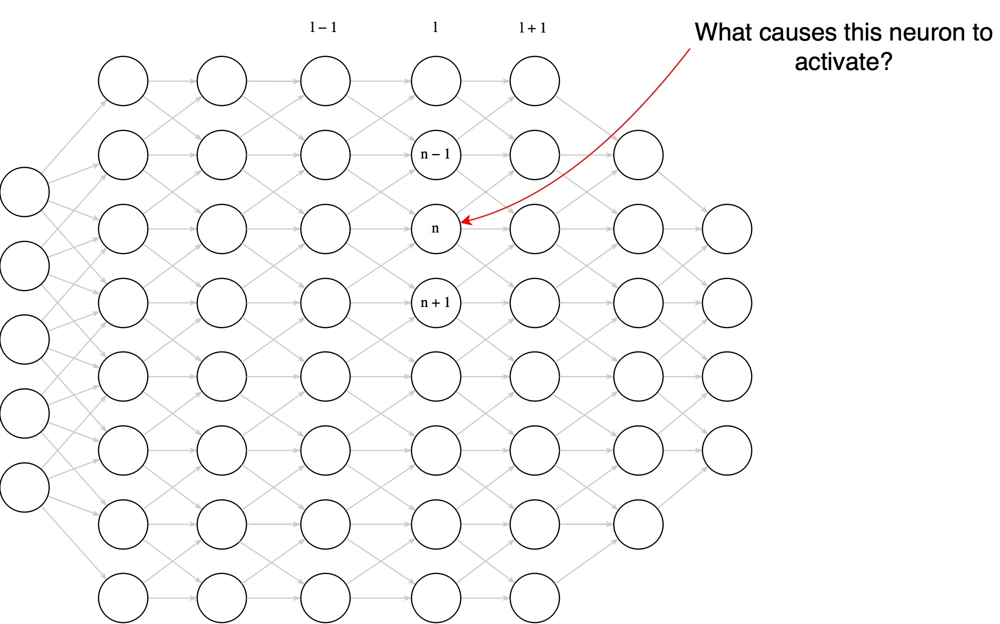
Which examples maximally activate a neuron? Example selection
\[
\bf{x}_0 = \operatorname{argmax}_{\bf{x} \in \text{Te}}
\Phi^l_n\left(\bf{x}; \theta\right)
\]

Our top example - what does this tell us?
ZeilerNet top-9 examples for 9 different neurons in layer 1
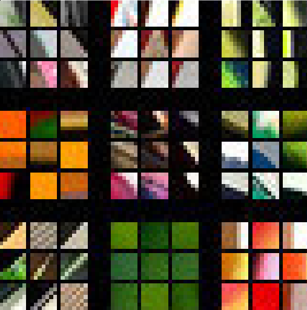
ZeilerNet top-9 examples for 16 different neurons in layer 2
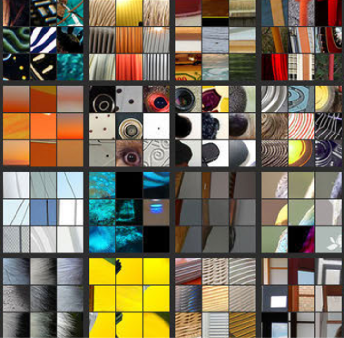
ZeilerNet top-9 examples for 12 different neurons in layer 3
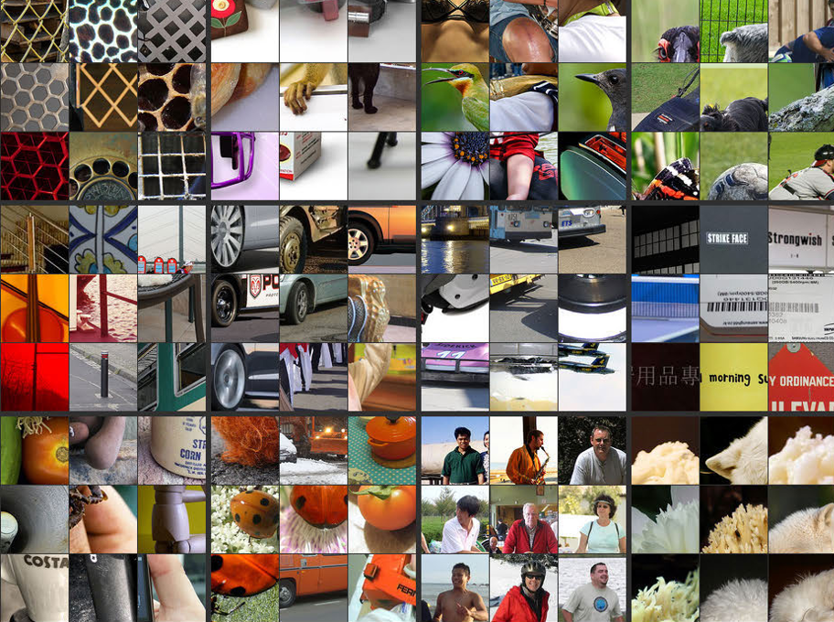
ZeilerNet top-9 examples for 4 different neurons in layer 4
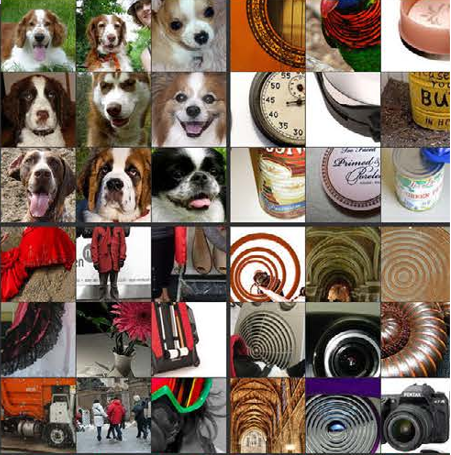
ZeilerNet top-9 examples for 4 different neurons in layer 5
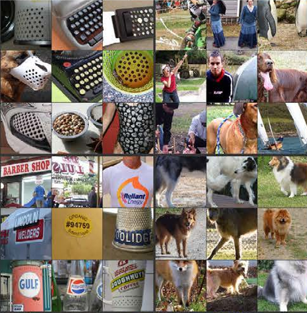
ZeilerNet top-9 examples for 4 different neurons in layer 5
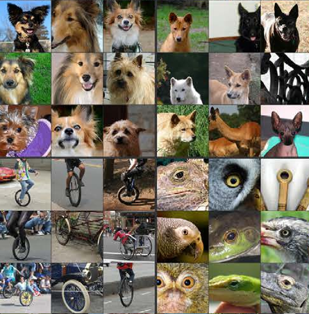
Figures from Zeiler & Fergus - 2013
Activation Maximisation
How about synthesizing images that maxmially activate a neuron using gradient ascent.
Let $I = \{0..255\}^{W \times H \times 3}$
\[ \bf{x}_0 = \underset{\bf{x} \in I}{\operatorname{argmax}} \Phi^l_n\left(\bf{x}; \theta\right) \]
Implementing activation maximisation
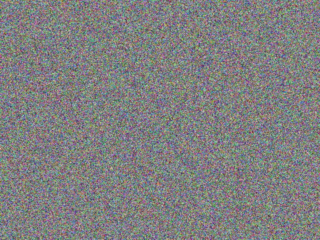
- Initialise $\bf{x}_0$ with random noise
- Repeat $n$ times (e.g. $n = 2000$):
- Compute the partial derivatives of the neuron activation with respect to each input pixel: $\nabla_{\bf{x}}\Phi^l_n(\bf{x}; \theta)$
- Update image: $\bf{x}_{m + 1} = \bf{x}_m + \lambda \nabla_{\bf{x}_m}\Phi^l_n(\bf{x}_m; \theta)$
Recall that $\nabla_{\bf{x}}\Phi^l_n(\bf{x}; \theta)$ is made up of partial derivatives $\frac{\partial \Phi^l_n(\bf{x}; \theta)}{\partial x_{i,j}}$
So what do these synthetic images look like?
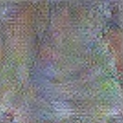
Example of activation maximisation from
Feature Visualsation Review - Olah, Mordvintsev,
Schubert (2017)
Improving the quality of synthetic images
We know a lot about images, we can utilise this knowledge to guide the optimisation process
The synthetic images has high frequency noise, we can discourage that by penialising it:
- $L_n$ regularisation
- Blurring in between optimisation steps
- Total variation regularisation
Transformations preserving semantic contents:
- Blurring
- Shifting
- Rotating
- Scaling
- Adding random noise
- Changing brightness
Encoding prior knowledge with a generative network
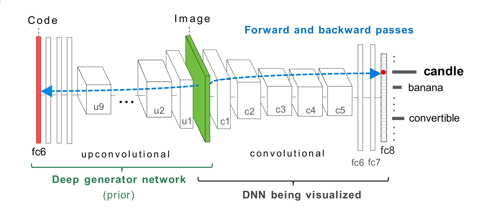
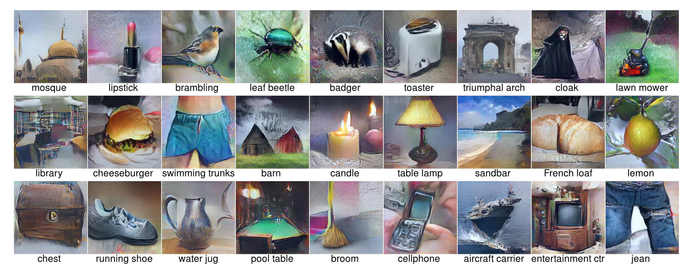
Synthetic examples computed via activation maximisation
on CaffeNet trained on ImageNet.
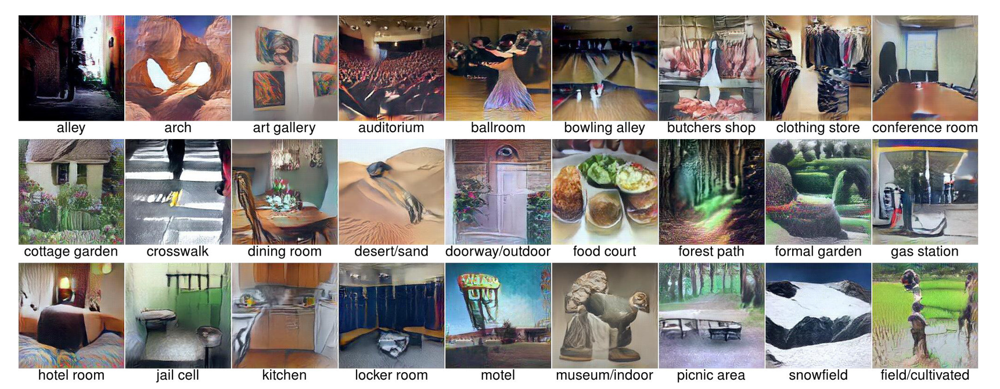
Synthetic examples computed via activation maximisation
on AlexNet trained on MIT Places.
Synthesizing the preferred inputs for neurons in neural networks via
deep generator networks - Nguyen et al (2016)
Multifaceted Neurons
Dataset examples maximally activating a chosen neuron.
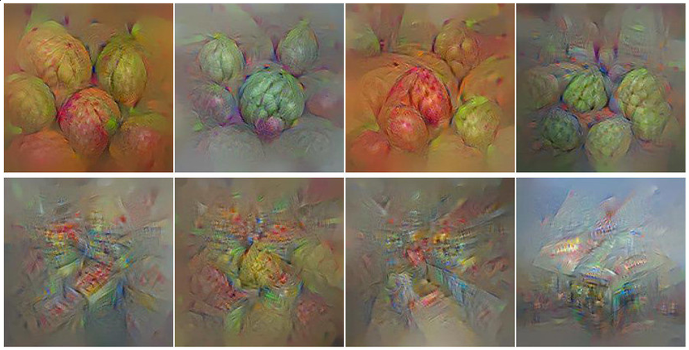
Synthetic examples for the same neuron
Multifaceted Feature Visualization: Uncovering the
Different Types of Features Learned By Each Neuron in Deep
Neural Networks- Nguyen et al (2016)
Attribution
Attribution: Region Ablation
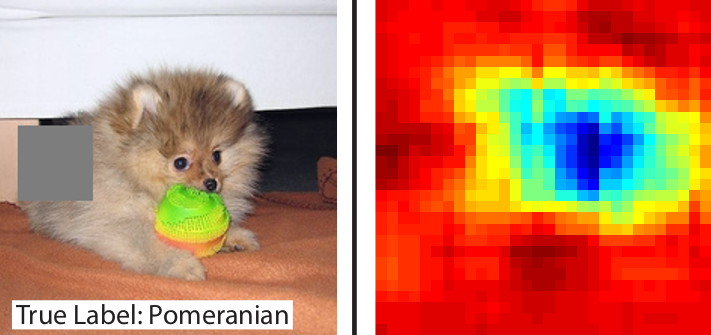
Summary
- Feature visualisation: Dataset example selection, activation maximisation
- Attribution: Region ablation